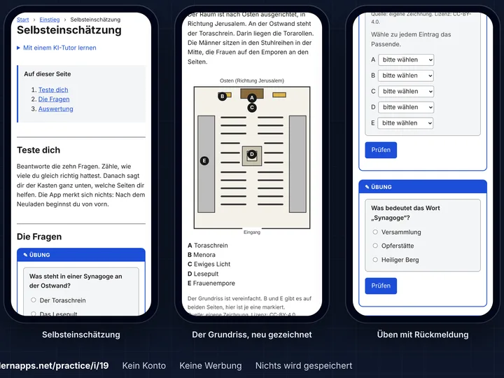

An app to practise, made to measure
Your child has a test next week, and you want to practise exactly what will come up. Or you are covering a class for an absent teacher and need exercises on what they are working on right now. For occasions like these, there is rarely a ready-made app that fits.
This is where it comes into being. With your AI assistant and our guide, you turn the material you already have into an app to practise, made to measure, with little effort. You can use it, for example, to
- prepare your child for a test,
- give a class exercises for a cover lesson,
- find out where a class stands when you cover for a teacher,
- catch up on missed lessons.
The app is free and runs in the browser. Whoever practises with it needs neither an account nor an installation.
Should your child learn a topic at leisure, with no test in sight? That is what the apps in the catalogue are for: there to stay, built by parents and teachers. This page is about practising for an occasion, with exactly your material.
What you get
An example from a real session with Claude: photos of worksheets on Judaism (religious education, year 6, Hesse) become an app for the next test. The session and the app are in German.
-

A short conversation
A few short messages from you. Claude asks where it matters.
-

You decide, Claude does the work
Claude makes an app that fits the scope to learn, with plenty of exercises. Without you having to do anything.
-

An app for exactly this test
Explained first, then practised, on a phone and without an account.

None of it is staged: here is the whole conversation, unabridged, with every step Claude took.
How it works
You need three things:
- A moment of time, perhaps in the evening, when things are quieter.
- An AI assistant that can write software: ideally Claude Code; Gemini and Codex should work too. It is often included in a subscription you already have. Check once what yours covers.
- A GitHub account: free, an email address is enough, and your AI assistant can help you create it if needed. Children under 13 may not have an account of their own, so an adult submits for them. More in GitHub, explained.
-
Your assistant
Maybe it already exists
Maybe someone has already built an app that fits your occasion. Your assistant searches the catalogue for it. If there is one, you simply use it: free and without signing up, like every app on lernapps.net.
-
Your assistant
Your material becomes your app
You give it photos of textbook pages or worksheets. From them it puts together explanations, exercises and a self-check, made for exactly your material. It proposes what is covered; you say yes or change it.
-
You
A form is all it takes
You send us the content with a short form. This creates an issue: a public message in our project on GitHub, where we answer you.
-
We
Ready in minutes
We check the content and build the app from it. After a few minutes, its address appears in the issue. If something is not right yet, the issue says what is missing, and your assistant fixes it.
-
You and the learners
Start right away
A link is all it takes: your child or the class practises on any device with a browser, without an account or an installation.
-
You and us
What is good stays for everyone
If the app helped, it will probably help others who face the same material. A 👍 on your issue tells us so, and we check whether it fits into the catalogue. Step by step, more and more knowledge comes together that people really need.
The app stores nothing about the learners. The self-check shows them how far they have got, and they keep the result to themselves. After two weeks the app is deleted, unless it helped; see Lifetime. Submit: step by step explains every move of the submission. How it all fits into the platform is shown by the journey A tailor-made app for an acute occasion in the platform design.
Start with the assistant
Copy this sentence into the conversation with your AI assistant and describe your occasion:
Read https://lernapps.net/practice/llms.txt and help me make an app to practise for <occasion>.
For example: "for my daughter's maths test next week" or "for a cover lesson in English, year 7". The guide for the assistant is llms.txt. It is written in German, and so is the content of the apps.
Good to know
- The app checks itself: Your assistant builds the app and checks it before you submit. So it usually gets through the first time.
- Privacy: The form, the ZIP file and the app are public. So no names, no school and no photos belong in the content. More in Privacy and copyright.
- Two weeks: That is how long the app stays online. How it can stay longer is explained in Lifetime.
Where next?
| I want to … | Page |
|---|---|
| submit a preparation | Submit: step by step |
| know what the ZIP file may contain | Rules for content and details |
| know what happens to the data and who owns the content | Privacy and copyright |
| know how long an app stays | Lifetime |
| prepare a submission as an AI assistant | llms.txt |
For maintainers
- Operations: what the repository is for, how it runs and how to find faults.
- Checks: what is checked in a submission.
- Evaluating the guide: how an agent starts and evaluates a new session after a change (manual for now).
- Guide for assistants: llms.txt leads to the plan template
guidance/plan-template.md; it installs the four skills inskills/and the content skills of the tooling. - Architecture: how the repository is built (arc42).